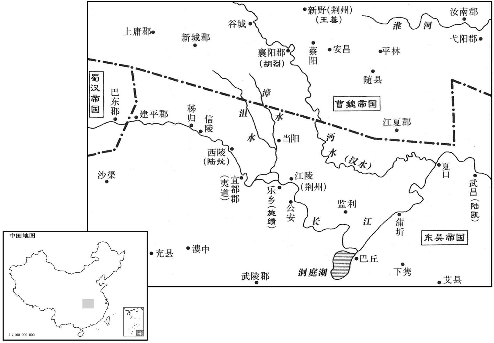
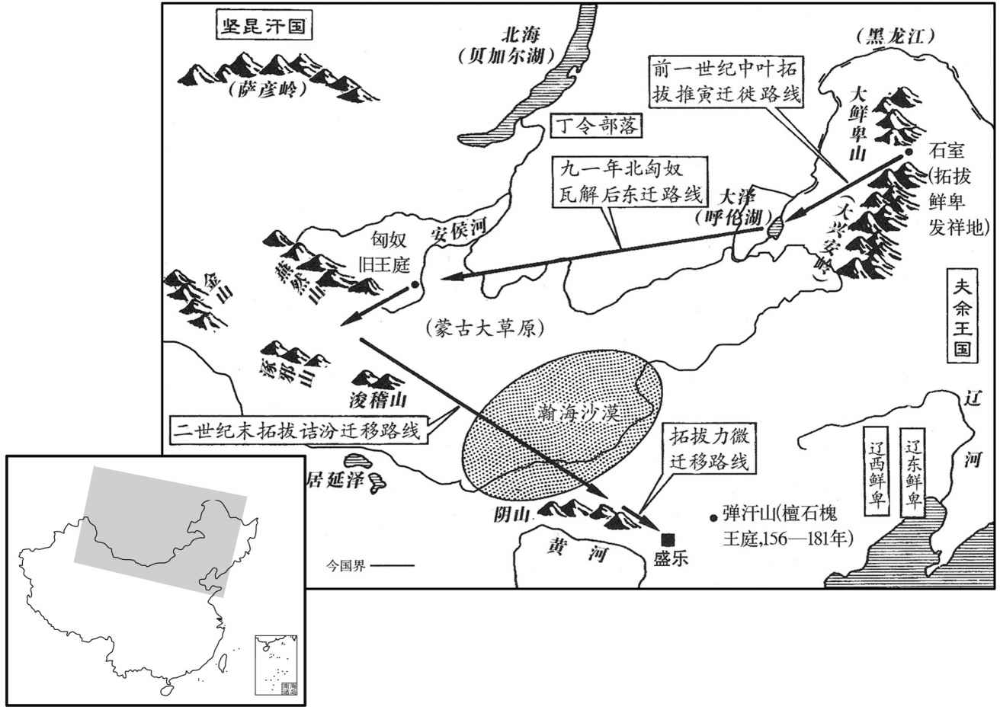

公元261年资治通鉴：本年记事、原文与白话对照
按原书编年位置阅读；追叙和史论不等于本年发生的事件。白话采用所据译本，缺译不以生成译文补齐。
卷77 · 本年记事
公元261年 · 魏元皇帝景二年
二年〔（辛巳、二六一）〕
上传原文的注释括号有异常，字符原样保留；无法可靠划分的段落默认全文显示。
本年事件索引（现代整理）

本年形势与背景参考图

本年形势与背景参考图
春，三月，襄阳太守胡烈〔襄阳县，汉属南郡。沈约曰：魏武不荆州，分南郡编以北及南阳之山都立襄阳郡。〕表言：「吴将邓由、李光等十八屯同谋归化，遣使送质任，〔质，音致。〕欲令郡兵临江迎拔。」诏王基部分诸军径造沮水以迎之。〔造，七到翻。应劭曰：沮水出汉中房陵东入江。师古曰：沮，千余翻。南郡临沮县沮水得名。水经注曰：自临沮界东南过枝江县，又东南入于江。〕「若由等如期到者，便当因此震荡江表。」基驰驿遗司马昭书，〔遗，于季翻，下同。〕说「由等可疑之状，且当清澄，〔谓事之虚实未定，如水之混浊，莫测其浅深，且当澄以俟之；盖亦当时常语也。〕未宜便举重兵深入应之。」又曰：「夷陵东西皆险莅，〔莅，与狭同。〕竹木丛蔚，卒有要害，弩马于陈。〔蔚，音尉，又纡勿翻。卒，读曰猝。谓猝然敌人于要害之地设伏邀击，弩马不得陈其力也。〕今者筋角濡弱，〔考工记：弓人为弓，冬析干，春液角，夏治筋，秋合三材。春液角，夏治筋，以阳煦而筋角濡滑也。冬析干，和合三材，以阴凝而坚致也。春夏之交，阳气蒸润，筋角濡弱，则弓弩之力不劲。〕水潦方降，废盛农之务，要难必之利，此事之危者也。〔要，一道翻。〕姜维之趣上邽，〔趣，七喻翻。〕文钦之据寿春，皆深入求利，以取覆没，此近事之鉴戒也。嘉平已来，累有内难，〔谓曹爽兄弟既死，累有废立之事，毌丘俭、诸葛诞相继而举兵也。难，乃旦翻。〕当今之宜，当务镇安社稷，抚宁上下，力农务本，怀柔百姓，未宜动众以求外利也。」昭累得基书，意狐疑，敕诸军已上道者，且权停住所在，〔今各就其所至之地而住军也。〕须候节度。〔须，待也。〕基复遗昭书曰：「昔汉祖纳郦生之说，欲封六国，寤张良之谋而趣销印。〔事见十卷汉高帝三年。复，扶又翻；下同。趣，读曰促。〕基谋虑浅短，诚不及留侯，亦惧襄阳有食其之谬。」〔食其，音异基。〕昭于是罢兵，报基书曰：「凡处事者多曲相从顺，鲜能确然共尽理实，〔处，昌吕翻。鲜，息浅翻。〕诚感忠爱，每见规示，辄依来旨，已罢军严。」既而由等果不降。〔降，户江翻。〕烈，奋之弟也。
春季，三月，襄阳太守胡烈上表说：“吴国将领邓由、李光等十八个营垒共同商定归顺我国，并派遣使者送来人质，想让我们的军队开到长江边去迎取。”诏令让王基布置军队直接到沮水去迎接。诏书说：“如果邓由等人能如期到达，就会因此而震荡江表。”王基派驿使快速送信给司马昭，陈述邓由等人的可疑情况，说：“此事还应当进一步澄清查证，不应立即发重兵深入敌境去接应。”又说：“夷陵东西两边都是险要狭隘之地，竹木丛密茂盛，如果敌人突然在要害之地出击，那么我们的兵马就不能施展力量。如今正值春夏之交，弓弩受潮而柔软无力，而且正当降雨之后，此时废弃繁忙的农事，邀取难以必得的利益，这是危险的事情。姜维趋进上，文钦占据寿春，都是因深入敌境求取利益而遭到全军覆没的结局，这是近来之事的戒鉴。嘉平年间以来，多次发生内部危难，当今我们应做的事宜，最重要的是力求安定国家社稷，抚慰上下臣民，努力从事农业生产。安抚百姓，不应兴师动众以求外部利益。”司马昭多次得到王基书信，犹豫不定，命令已经上路的诸军暂时停止前进就地驻扎，等候新的部署。王基又给司马昭写信说：“以前汉高祖采纳郦食其的意见，想要分封六国，明白张良的谋略后就迅速追回销毁了已刻之印。我的谋虑短浅实在不如留侯张良，但也害怕襄阳之事会出现听信郦食其之言的错误。”于是司马昭停止进兵，又给王基写回信说：“一般人处事大多曲己而顺从，很少能明确而详尽地向我陈述实在的道理。真诚地感谢你的忠爱，多次得到你的规劝晓喻。现在就依照你来信的意思，已经停止了发兵。”到了约定日期，邓由等人果然不来投降。胡烈是胡奋之弟。
秋，八月，甲寅，复命司马昭进爵位如前，不受。
秋季，八月，甲寅（疑误），再次命令司马昭晋升爵位像以前那样，他仍然不接受。
冬，十月，汉主以董厥为辅国大将军，诸葛瞻为都护、卫将军，共平尚书事，以侍中樊建为尚书令。时中常侍黄皓用事，厥、瞻皆不能矫正揉曲使直曰矫。〕士大夫多附之唯建不与皓往来。秘书令郄正久在内职，与皓比屋，〔比，毗至翻，近也，并也，联也；又簿必翻，相次也。〕周旋三十余年，澹然自守，以书自娱，既不为皓所爱，亦不为皓所憎，故管不过六百石，〔秘书令，秩六百石。〕而亦不罹其祸。汉主弟甘陵王永憎皓，皓谮之，使十年不得朝见。〔朝，直遥翻。见贤遍翻。〕
冬季，十月，汉后主任命董厥为辅国大将军，诸葛瞻为都护、卫将军，共同管理尚书事，又任命侍中樊建为尚书令。当时宦官中常侍黄皓当政，董厥、诸葛瞻都不能纠正他的错误行事，士大夫们也都依附于他，只有樊建不与黄皓往来。秘书令正多年在宫内任职，与黄皓的房屋相邻，周旋共处三十余年，淡然自守，每日以读书为乐，既不被黄皓所喜爱，也不被黄皓所憎恶，因此官职不过六百石，但也没遭受祸患。汉后主的弟弟甘陵王刘永憎恶黄皓，黄皓就在汉后主面前诋毁他，使他十年都不得朝见。
吴主使五官中郎将薛珝聘于汉，〔珝，况羽翻。〕及还，吴主问汉政得失，对曰：「主闇而不知其，臣下容身以求免罪，入其朝不闻直言，经其野民皆菜色。臣闻燕雀处堂，子母相乐，以为至安也，突决栋焚，而燕雀怡然不知祸之将及，其是之谓乎！」〔魏相子顺引先人之言也。呜呼！蜀之亡形成矣，薛珝见而知之。濮阳兴、张布用事浦里塘之役，吴民愁怨，韦昭、盛冲以切直而不得居王所，珝亦知之否邪﹖知而不言，无亦容身而求免罪邪﹖处，昌吕翻。乐，音洛。〕珝，综之子也。〔薛综见七十二卷明帝青龙元年。〕
吴王派五官中朗将薛到蜀汉去访问，回来后，吴王向他询问蜀汉朝政的得失，他回答说：“主上昏乱暗弱而不知自己的错误，臣下安身其间只求免罪不思进取，进入其朝廷听不到忠直之言，途经其田野看到百姓们都面有饥色。我听说燕雀处于堂屋之上，子母之间相互嘻乐，认为这是最安定的地方，烟囱破裂屋栋被焚，而燕雀仍怡然自得而不知祸之将至，这指的就是蜀汉目前的状况。”
是岁，鲜卑索头部大人拓跋力微始遣其子沙漠汗入贡，因留为质。〔索，昔各翻。汗，音寒。质，音致。〕力微之先，世居北荒，不交南夏。〔魏收先出自黄帝，黄帝子曰昌意，昌意少子受封北国，有大鲜卑山，因以为号。黄帝以土德王，北人谓土为「托」，谓后为「拔」，故以为氏。或曰：自谓托天而生，拔地而长，故为托拔疧。萧子显曰：匈奴女名托跋，妻李陵，胡俗以母为姓，故为李陵之后而甚讳之，有言其是陵后者，辄见杀。夏，户雅翻。〕至可汗毛，始强大，〔可汗，北方之尊称，犹汉时之单于也。宋白曰：虏俗呼天为汗。可，读如渴。汗，何干翻。〕统国三十六，大姓九十九；后五世至可汗推寅，〔魏书曰：汉桓帝时，鲜卑檀石槐分其地为东西三部，其大人曰置鞬落罗，曰律推演、宴荔游等，皆为大帅。推演，盖即推寅也。按魏收魏书帝纪：毛死，贷立；贷死，观立；观死，楼立；楼死，越立；越死，推寅立。推寅，盖俗云钻研之义。〕南迁大泽；又七世至可汗邻，推寅死，利立；利死，俟立；俟死，肆立；肆死，机立；机死盖立；盖死，侩立；侩死，邻立。〕使其兄弟七人及族人乙旃氏、车惃氏〔车，昌遮翻。惃，胡昆翻，又公浑翻，又古本翻。〕分统部众为十族，〔按魏书官氏志：毛统国有九十九姓，至邻，七分国人，使诸兄弟各摄领之。乃分其民，以兄为纥骨氏，后改为胡氏；次兄为普氏，后改为周氏；次兄为拔拔氏，后改为长孙氏。弟为达奚氏，后改为奚氏；次弟为伊娄氏，后改为伊氏；次弟为丘敦氏，后改为丘氏；次弟为侯氏，后改亥氏。七族之兴，自此始也。又命叔父之胤曰乙旃氏，后改为叔孙氏。又命疏族为车惃氏，后改为车氏。凡兴托拔氏为十姓，百世不通婚。〕邻老，以位授其子诘汾，使南迁，遂居匈奴故地。诘卒，力微立，复徙居定襄之盛乐，〔汉定襄郡有成乐县，后汉属云中郡。建安二十年，并云中、定襄、五原、朔方为新兴郡止置一县，以属新兴；而盛乐故县弃之荒外，故力微得居之。后魏既盛，南都平城，置盛乐宫于其地，永熙中，又置盛乐郡。复，扶又翻。〕部众浸盛，诸部皆畏服之。〔拓跋氏始见于此。鲜卑轲比能与魏为敌者也。轲比能死，北边差安，而拓跋氏盛矣，为后魏张本。〕
两版字句有差异，建议核对原文。
这一年，鲜卑族索头部大人拓跋力微第一次派他的儿子沙漠汗入朝进贡，于是就留下他为人质。拓跋力微的祖先，世代居住在北部荒远之地，不与南方的华夏交往。到可汗拓跋毛时，开始强大起来，统治的小国有三十六个，大姓之族九十九个；经历五代到可汗拓跋推寅，向南迁至大泽；又经历了七世至可汗拓跋邻，让他的兄弟七人以及同族人乙旃氏、车氏，分开统领部族百姓成为十个部族，拓跋邻老了之后，传位给他的儿子拓跋诘汾，让他再往南迁，就定居在匈奴人的故地。拓跋诘汾死后，拓跋力微即位，又迁居到定襄郡的盛乐县，部族的兵民日益强盛，其他各部族都畏惧服从他。